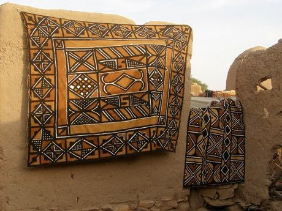

Home / Living Traditions / Africa: Sahel, West and Central
Encyclopedia ID 86
Bogolan mud cloth
Also known as Bogolanfini


Paint motifs in mud over a pale cloth, fill the negative space, then reveal the dark-and-cream pattern; match classic designs for stars.
Heritage note
Part of the living heritage of Mali. Some forms of this practice carry deep meaning for the communities who keep it; here we describe the play and the craft only, with respect for its roots.
Origins
A living tradition passed from person to person; it is not tied to a single dated origin. It belongs to the cultural world of Africa: Sahel, West and Central.
Sources
Related entries

Kuba cloth pattern puzzle
DR Congo · Crafts and making
Adinkra Cloth Stamping
Ghana +1 · Crafts and making
Tiebele House Painting
Burkina Faso · Crafts and making
Asafo Flag Appliqué
Ghana · Crafts and making
Dahomey Appliqué Panel Studio
Benin · Crafts and making
Dakar Car Rapide Livery Painter
Senegal · Crafts and making
More from Mali

Bozo Net Casting
Niger +1 · Puzzles and mind games
Dogon Granary Builder
Mali · Crafts and making
Imzad Fiddle
Niger +2 · Musical instruments
Mud Plaster Season
Mali · Crafts and making
Sahel Salt Caravan
Niger +1 · Sports with animal partners
Yote Capture Grid
Senegal +2 · Board and table games